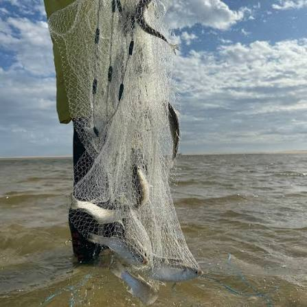

Livelihoods · Fisheries
Community fishing
Fishing is an important source of food and income for communities across South Sudan. This project highlights local fishing activity and the equipment communities use to support their livelihoods.
Explore the community-focused work and development priorities we support across Africa.
We work with communities and partners to strengthen livelihoods, local organizations and sustainable development.
Livelihoods · Fisheries
Fishing is an important source of food and income for communities across South Sudan. This project highlights local fishing activity and the equipment communities use to support their livelihoods.

Agriculture · Livelihoods
We support stronger local livelihoods by connecting agricultural opportunity with practical business development and community-led approaches.
View agribusiness images
Sustainability · Community development
We work with local stakeholders on inclusive approaches that strengthen community resilience and support long-term development priorities.

Fishing equipment
We sell fishing hooks and nets. Contact us for product details and orders.
Ask about fishing gearScenes and equipment from the fishing project, shared to bring local work into view.


.jpeg)

Let’s explore how our shared expertise and local relationships can support meaningful development outcomes.